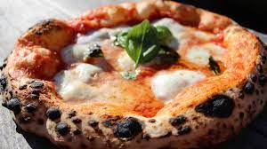

Volver
Pizza napolitana

Descripcion
Una de las mayores particularidades que definen este tipo de plato es que a menudo hay más salsa que queso. Esto suele dejar la superficie de la pizza húmeda o un poco empapada. Por ese motivo, las pizzas napolitanas son generalmente bastante pequeñas, haciéndolas más cercanas al tamaño de una ración por persona.
Ingredientes
- aceite de oliva extra virgen
- agua 700cc
- harina 1kg
- levadura seca 1 gramos / fresca 3 gramos
- sal 25 gramos
- tomates 1kg
- muzzarela 1kg
Pasos
- colocar la harina en un bowl
- agregar sal, aceite y azucar
- amazar
- dejar levar unos 20 minutos
- dividir en 6 u 8 bollos
- 24hs en la heladera
- agragar salsa de tomate
- agragar queso
- cocinar en el horno 500grados aprox